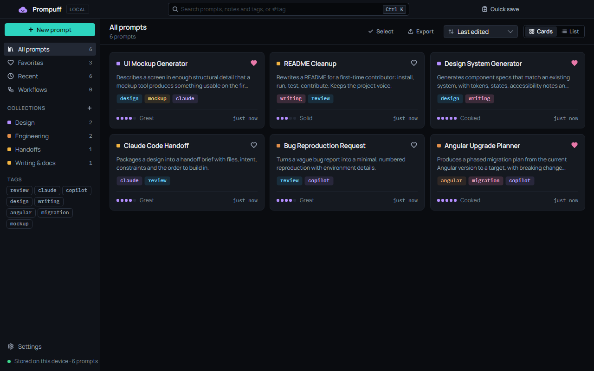
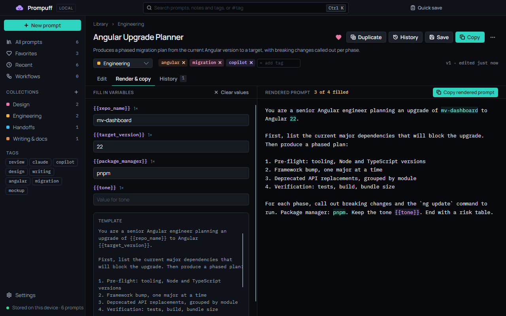
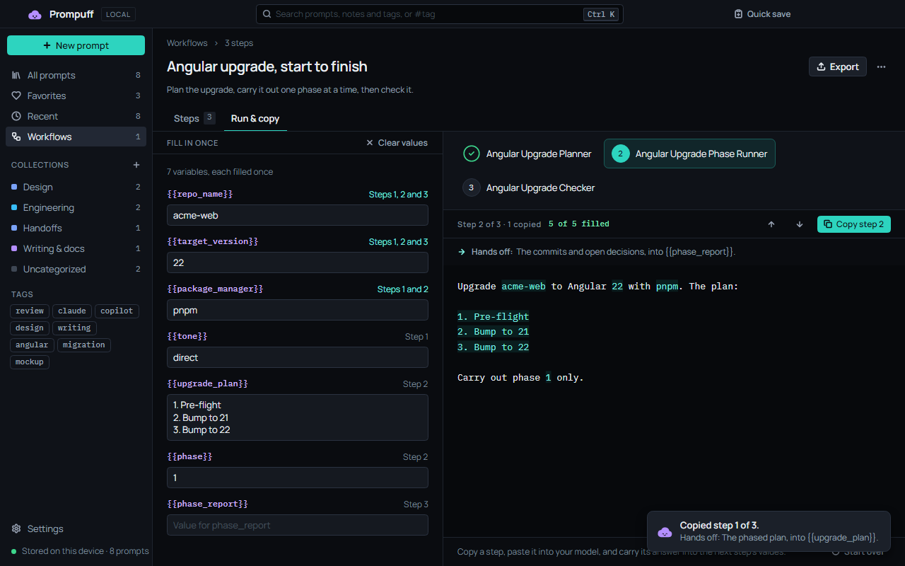
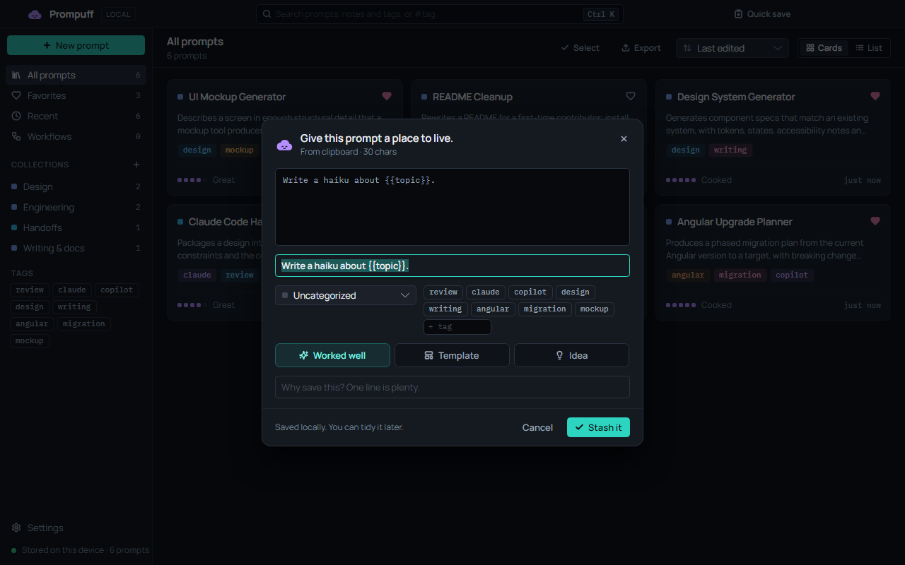
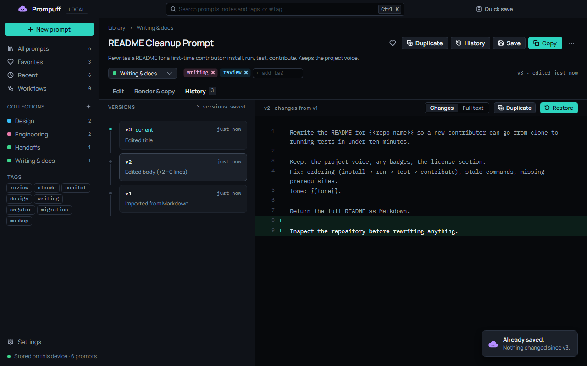
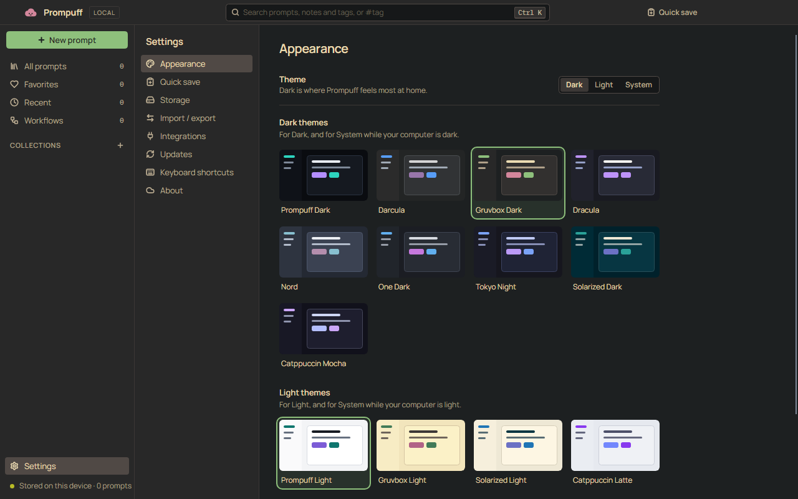
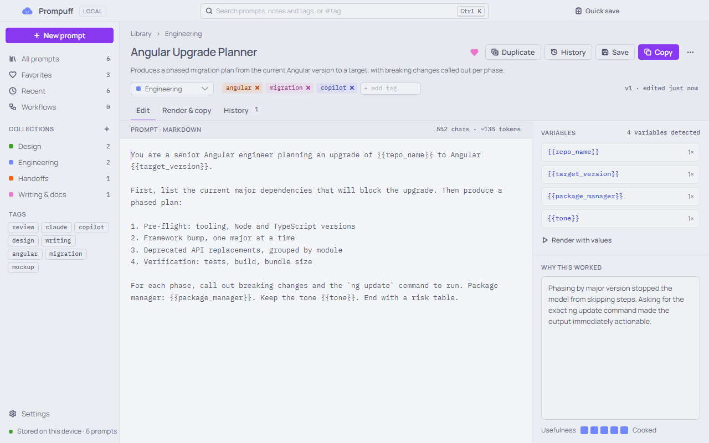
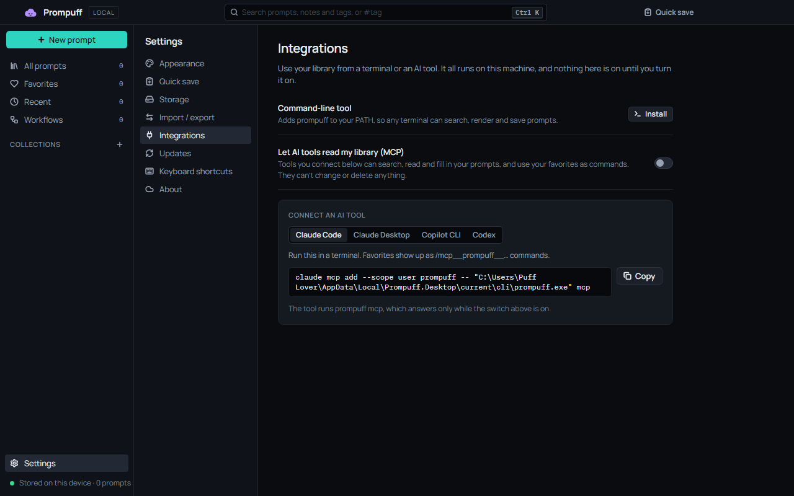

Talk is cheap. Show me the prompts.
A local-first home for prompts worth keeping.
Save the prompts that worked, fill in their {{variables}} and copy the result. Every saved change becomes a version you can read back or restore. Your prompts stay on your machine: no account, no cloud, no telemetry.
Free and open source, for Windows, macOS and Linux. Other platforms
The launch video
The launch video is on its way. Until it lands, the screenshots below are the real thing.
What it does
A small desktop app for the prompts that actually worked, and a note on why each one did.
Keeps the prompts that worked
Each prompt has a title, a description, the prompt itself and a note on why it worked. File it in a collection, tag it, give it a heart, and rate it from Meh to Cooked.

Renders {{variables}}
Fill in the blanks, watch the preview update, and copy the result. Anything you leave empty stays as a {{token}}, and each prompt remembers its values for next time.

Chains prompts into workflows
Plan, build, then check. Fill in the shared details once, copy each step into your model, and carry its answer to the next. Prompuff never runs a model itself.

Captures from anywhere
Copy a prompt in any app and press Ctrl+Alt+P (⌃⌥P on a Mac). Quick save opens with your clipboard, Enter stashes it, and you’re back where you were.

Keeps every version
Every saved change to the title, description, prompt or notes becomes a version. Read the line diff, and Restore brings an old one back as a new version, so nothing is lost.

And the small things
- Finds things fast
- Ranked search that ignores case and accents, so “cafe” finds “Café”. Type
#tagto filter. - Keeps up with the keyboard
- Ctrl+K opens the command palette. Arrows, Enter and type-to-jump get around the library.
- Travels as Markdown
- Export one
.zipfor another machine or a teammate, or import a whole folder, such as an Obsidian vault. - Forgives
- Deleted prompts wait 30 days in Recently deleted, and the library is backed up once a day.
Dresses up in thirteen themes
Prompuff Dark and Light, plus palettes you know from your editor. Pick a dark one and a light one, and System follows your computer between them.
Dark
- Prompuff DarkThe default. Dark is where Prompuff feels most at home.Rewrite the README for acme in a {{tone}} voice.
- DarculaRewrite the README for acme in a {{tone}} voice.
- Gruvbox DarkRewrite the README for acme in a {{tone}} voice.
- DraculaRewrite the README for acme in a {{tone}} voice.
- NordRewrite the README for acme in a {{tone}} voice.
- One DarkRewrite the README for acme in a {{tone}} voice.
- Tokyo NightRewrite the README for acme in a {{tone}} voice.
- Solarized DarkRewrite the README for acme in a {{tone}} voice.
- Catppuccin MochaRewrite the README for acme in a {{tone}} voice.
Light
- Prompuff LightRewrite the README for acme in a {{tone}} voice.
- Gruvbox LightRewrite the README for acme in a {{tone}} voice.
- Solarized LightRewrite the README for acme in a {{tone}} voice.
- Catppuccin LatteRewrite the README for acme in a {{tone}} voice.


Works from a terminal, and from your AI tools
Same library, whether or not the app is open. The app picks up changes within two seconds.
The prompuff command
Install it from Settings › Integrations. It searches, renders and saves prompts, names them by title or a few words only they match, and prints JSON with --json for scripts.
$ prompuff search angular
Angular Upgrade Planner · #angular #migration
$ prompuff render "Angular Upgrade Planner" --var repo_name=acme --var target_version=22
You are a senior Angular engineer planning an upgrade of acme to Angular 22.
⋮
Package manager: {{package_manager}}. Keep the tone {{tone}}. End with a risk table.
Not filled, so left as {{tokens}}: package_manager, tone. Pass --var name=value to fill one.
$ git diff | prompuff quick-save --title "Review this diff" --tag review
Saved “Review this diff”.An MCP server, off until you say so
Claude Code, Claude Desktop, GitHub Copilot CLI and Codex can search, read and render your prompts, and your favorites turn up as slash commands. It’s read-only, and it shares nothing until you turn on Let AI tools read my library in Settings › Integrations.
Settings has each tool’s setup ready to copy, with the full path filled in.
claude mcp add --scope user prompuff -- prompuff mcp
codex mcp add prompuff -- prompuff mcp
copilot mcp add prompuff -- prompuff mcp
Download
Free and MIT-licensed. Every build is self-contained, so there’s no .NET to install, and every build updates itself.
Windows
Your systemmacOS
Your systemApple Silicon
Intel
The builds aren’t notarized by Apple, so macOS blocks the first launch. Open Prompuff once and close the warning, then choose Open Anyway in System Settings › Privacy & Security.
Prompuff is checked on GitHub’s macOS runners, not by hand, because the developer has no Mac. If something looks off, open an issue.
Linux
Your systemMake it executable, then run it:
chmod +x Prompuff-linux-x64.AppImage
./Prompuff-linux-x64.AppImageIf your distribution doesn’t ship FUSE 2, run it with APPIMAGE_EXTRACT_AND_RUN=1 set.
Check a download
Every release has a SHA256SUMS file. Put it beside your download and run:
- Linux
sha256sum --check --ignore-missing SHA256SUMS- macOS
shasum -a 256 --check --ignore-missing SHA256SUMS- Windows
Get-FileHash Prompuff-Setup.exein PowerShell, then compare it with the line in SHA256SUMS.
Want new versions early? Settings › Updates has a Beta channel. Every version is on the releases page.
Your prompts stay on your machine
No account, no cloud, no telemetry.
- No analytics, crash reporting or AI calls.
- The only thing Prompuff asks the internet is whether there’s a new version. It sends nothing about your library, and you can turn it off in Settings › Updates.
- The
prompuffcommand and its MCP server never go online. The MCP server answers only the AI tool that started it, and only while Settings allows it. - Logs record prompt IDs and counts, never titles, prompts, notes or variable values.
This page keeps the promise too: no analytics, no trackers, and nothing loaded from another site. The fonts, images and video all come from here.
The 1.0 promise
From 1.0 on, Prompuff’s formats stay stable.
- Every later version opens a 1.0 library, and a library from any earlier release, by migrating it forward after a backup.
- Markdown exported from 1.0 imports into every later version.
- Every migration is tested from every released schema version, using a fixture library for each.
The library format and the Markdown format are written down, for anyone reading them with other tools.